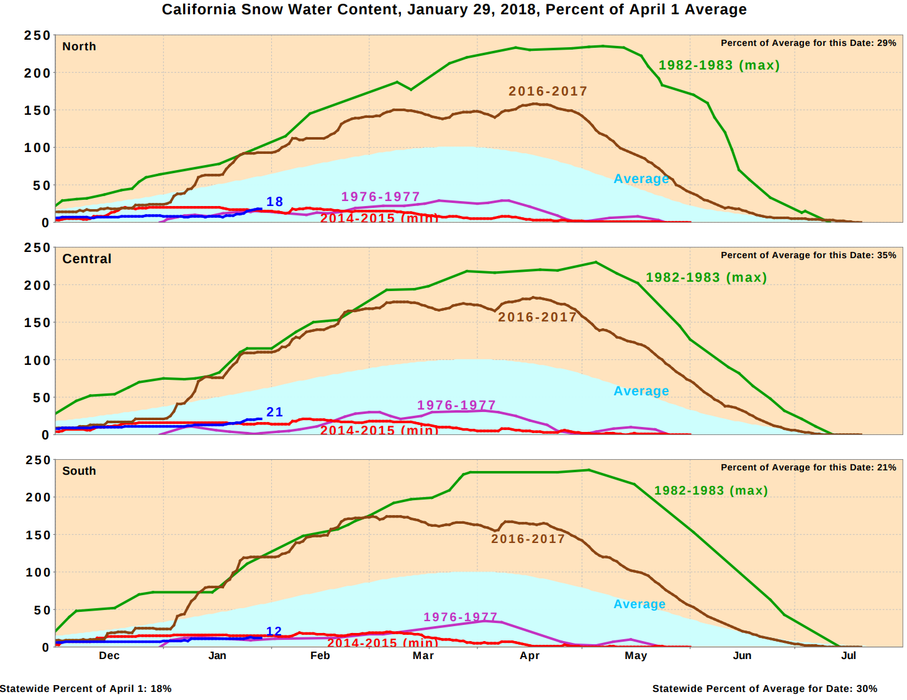

The lack of precipitation this year has alarmed many people all around California, especially Jeffrey Meng, a member of our own Troop 485 in Cupertino, CA. Although the previous year has seen record-breaking levels of snowfall, this year's showers have been anything but extreme.
No Snow, No Go
The low levels of snow this year has forced our troop to cancel many iconic winter activities, such as BearPaw. BearPaw is an activity organised by the Silicon Valley Monterey Bay Council located in Cisco Grove, CA each year. Participants of BearPaw build a snow shelter and spend the night in it. However, due to the low amounts of snow, our troop will not be going to BearPaw this year.
Many members of our troop dislike the cancellation of BearPaw, such as recently elected Patrol Leader Jeffrey Meng.
BearPaw is an integral part of our troop's culture. It is a yearly event which we cannot miss out on. Even if there isn't enough snow, we can camp there in tents. The lack of snow is simply an excuse put forth by soft cookies!
—Jeffrey Meng, January 29 PLC
Althoug BearPaw has been cancelled, we will still go to a campout on that day. SiC Glen Chen has said that he will try to book a campsite at the popular Point Reyes National Seashore, but is unsure if campsites are still available this late.
How Does It Measure Up?
How much snow have we been getting this year? It is really bad enough to cancel BearPaw? Here is a chart showing precipitation for northern, central, and southern California, compared to several other years.

Photograph provided by Snow Shelters
Chart provide by State of California CDEC